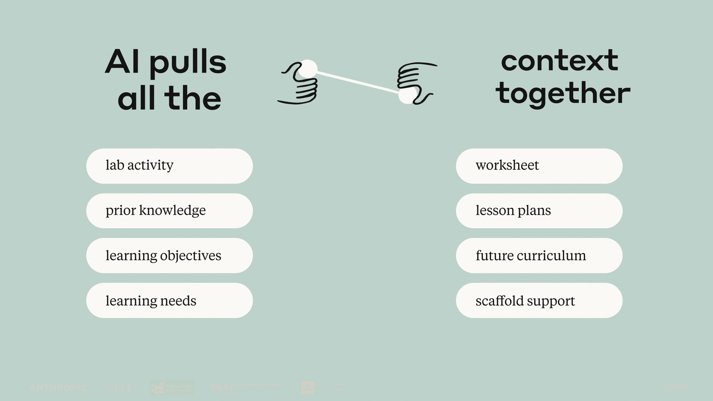
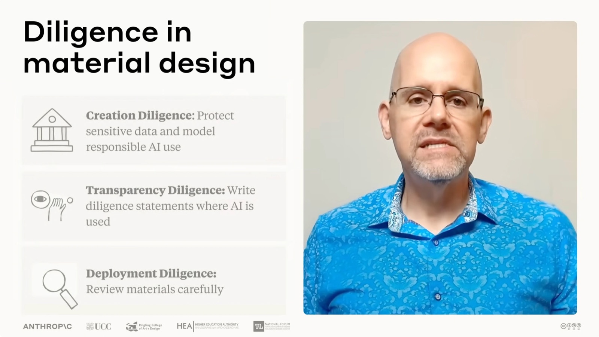

Delegation — 1
problem awareness
問題の把握。なぜ学生が混乱しているのか、何に対処すべきなのかを教えてくれる。
Lesson 04 / AI Fluency for Educators（公式 Lesson 4 of 4）
10:11 · 全文書き起こし＋公式 Academy 本文より
Anthropic 公式 AI Fluency for educators — コース最終回
コース最終回。明日のワークシートから期末試験まで、学生が実際に手を動かす教材をつくる回。これまでに積み上げた文脈があるおかげでもうゼロから始めることはないことを軸に、ひとつの具体例——ジャーナリズム専攻の学生が帰無仮説で躓いている——を 4D すべてに通して展開する。
この回で扱うのは、AI Fluency を使って学生が実際に手を動かす教材をつくること。明日のワークシートから期末試験まで、あらゆるものが対象になる。
学習教材は、学生が独力でできることと、そのコースで得た知識があればできることの間の橋渡しになりうる、と語られる。講義を補うワークシートでも、練習のための活動でも、採点する課題でも同じで——私たちは、学生の学びに本当に役立つ教材をつくるのに数えきれない時間を費やしている。AI は、その橋をより良く理解し、築くための強力なコネクターになりうる。
過去の会話、アップロードしたファイル、接続したツールから文脈が引き継がれていれば、これからつくるワークシート・活動・評価のすべてが、はるかに深い理解の上に立てるようになる。AI パートナーはすでに次のことを知っているからだ——自分の具体的な学習目標と、それが選んだ内容とどう関係するか。学生のために描いた教育的な道筋。そして自分の教育哲学と制約。
つまり、もうゼロから始めることはない。代わりにつくるのは、これまでにあったものの上に論理的に積み上がる教材だ。

AI pulls all the context together。左に lab activity / prior knowledge / learning objectives / learning needs、右に worksheet / lesson plans / future curriculum / scaffold support。前回同様、フレームワークの 4D すべてを通しでたどる。ただしこの動画はかなり高いレベルに留め、この形で AI と働くときの一般的な力学に焦点を当てる——より具体的なアイデアとワークフローについては、レッスン・演習・ハンドアウトを見てほしい、と断りが入る。
そのうえで動画は、ひとつの具体例をここから最後まで使い続ける。ジャーナリズム専攻の学生の一団が、統計学の帰無仮説と対立仮説（null and alternative hypotheses）の理解に苦しんでいる——とりわけ変数が自明でないときに。その混乱に対処する課題をつくる必要がある。
これまでの文脈構築のおかげで、AI パートナーはすでに次のことを知っている。
では、この状況でどう委任すればよいか。動画は 3 つのサブコンポーネントに沿って答える。
Delegation — 1
問題の把握。なぜ学生が混乱しているのか、何に対処すべきなのかを教えてくれる。
Delegation — 2
プラットフォームの理解。AI は多様な練習問題を素早く生成できることを思い出させてくれる。
Delegation — 3
タスクの割り振り。ここでは自然に決まる——自分が具体的な混乱点と望む成果を定義し、AI がコースの進行に沿った多様な練習シナリオをつくり、一緒に磨いていく。
ただし最も重要なのは、と動画は続ける。確立された文脈があるおかげで、AI は自分の教育的な連なりにぴったり収まる問題を生成できる。だからこそ、一緒に磨いていった先で、その課題が本当に学生の学びの旅に資するものになる。
AI は多くの話題に幅広い認識を持っている。しかし学習教材をつくるときは、文脈が鍵になる。たとえば、学生にトピックをどう提示するのが最善かについて、すでに AI と話してきたとする。そこでゼロから始めるのではなく、その共有された理解を参照する。動画で実際に読み上げられる言い方はこうだ。
Remember how we discussed that my journalism students need concrete examples before abstractions? Let's create a worksheet for null hypothesis that builds on the social media analysis examples from last week.
大意：私のジャーナリズムの学生は抽象の前に具体例が必要だ、と話し合ったのを覚えていますか。先週のソーシャルメディア分析の例の上に積み上がる、帰無仮説のワークシートをつくりましょう。
そのうえで、積み上げてきた文脈を活かしながら、成果物・プロセス・振る舞いの 3 つの記述で具体的な詳細を足していく。動画が列挙する指示文はそのまま次のとおり。
Description — 1 / 3:39
成果物の記述。何を出してほしいか。
Description — 2 / 3:46
プロセスの記述。どう取り組んでほしいか。
Description — 3 / 4:03
振る舞いの記述。やりとりの間どう振る舞ってほしいか。
自分の教育上の専門性は、伝え方に表れる。
AI が案を出し始めたら、評価力を働かせて役に立つものと立たないものを見分ける。たとえば AI が、人気のソーシャルメディアアプリを題材にした課題を提案してきたとする。身近で、関連があり、先週の議論ともつながるので、これは完璧だと思える。
ここで動画が強調するのは、採否を返して終わりにしないことだ。良い提案にも、合わない提案にも、理由を説明して返す。
提案がうまくはまるとき
やりがちなのは「ありがとう」と言って走り去ること。そうではなく、なぜそれが効くのかを AI に説明する——今後より良い提案を得るために。
提案が複雑すぎるとき
やりがちなのはただ却下すること。そうではなく、なぜそれが自分の文脈に合わないのかを説明する。
こうして文脈を育て続ける。記述と評価の往復は新しい会話を開き、フィードバックを与えてニーズを明確にしていくうちに、満足のいく結果にたどり着く。その過程で、他のトピックの新しい教え方を見つけたり、考えてもみなかった角度を探ったりすることがある。
ここでの要点は、会話を続け、文脈を育て続けること。そうすれば、新しくつくる学習教材のひとつひとつが、自分が設計した一貫した学びの旅を補強するものになる。
そして——良い評価は、問題も可能性も両方を認識する。ときに AI は別の分野からの手法を提案し、それが自分の概念を見事に照らし出すことがある。
教材をつくるとき、倫理的責任とは意図的であること（being intentional）を意味する。動画が挙げる留意点は次の 3 つ。
機微なデータを守り、責任ある AI 利用の手本を示す。そして学生に求めるのとまったく同じように、学術的な引用に細心の注意を払う。
自分の透明性そのものを、教育の機会に変えられる。diligence statement（誠実さについての声明）を書いて学生と議論し、自分が AI をどう使ったのか、そのプロセスで自分自身の人間としての専門性がどんな役割を果たしたのかを理解してもらう。
正確性・バイアス・誤り、そして自分が掲げた目標との整合について、教材を注意深く見直す。
最終的に、AI を使ったか使わなかったかにかかわらず、つくった教材の影響を所有するのは自分だ。

Diligence in material design。Creation Diligence: Protect sensitive data and model responsible AI use / Transparency Diligence: Write diligence statements where AI is used / Deployment Diligence: Review materials carefully。この 4D のアプローチは、多様な学習教材づくりに効く。
そして動画ははっきりこう言う——AI fluent な教育者は、このリストのどの項目についても「AI の使い方を一気に強化する秘密のプロンプト」を知っている必要はない。必要なのは、すでに持っている教育の専門性と専門分野の専門性を、AI との協働にどう適用するかを認識できることだけだ。
さらに、AI と作業を重ねるほど、互いに継ぎ目なく働く教材をつくるのが容易になる——AI がその文脈すべてを保持していられるおかげで。たとえば AI にこう尋ねられる。
最終的に、教材はばらばらの活動の寄せ集めではなく、意図的に設計された結束した学習体験として感じられるべきだ。
AI が多くの課題を、人間の学生なら合格かそれ以上の成績が付く水準で完了できてしまう——この事実は、あらゆる段階の教育に巨大な課題を生んだ。そして動画はそこで立ち止まり、はっきり認める。この課題に単純な解決策は無い。
幼稚園から大学院まで、それぞれの教育文脈が、学習を保証し評価するうえで固有の障害に直面している。それぞれの機関が、自分たちの法的・倫理的・専門職的な基準と制約の中で動いている。
私たちは全員、AI が浸透した世界でどう倫理的かつ効果的に教えるかを、いま模索している最中だ。
— Anthropic 公式 AI Fluency for educators, Lesson 4
そのうえで、話し手たちは自分たちの教育実践で分かったこととして、AI Fluency がこの巨大な課題と向き合う助けになると述べる。ただし順序がある——倫理的責任を働かせるには、まず自分の懸念と基準を同僚や学生と明らかにし、全員が同じ理解に立つ必要がある。
そしてこうした倫理的責任についての会話は、AI と協働して課題や評価を設計するプロセスに直接活きる。より深く知りたい場合は、姉妹コース Teaching AI Fluency を見てほしい、と案内される。
動画は、AI と学習教材をつくることについて2つの鍵となる考えを扱った、とまとめる。
単純に始めて、そこから複雑さを足していく。AI が高度すぎる下書きを出してきたら、学生の何が混乱すると思うかを説明して、足場かけ（scaffolding）を頼む。AI が素晴らしいものを出してきたら、なぜそれが良いのかを説明する。改訂のたびに文脈は深まり、今後の出力は良くなる。
良い提案も悪い提案も、あらゆる AI の提案に自分の専門性が要る。これは自分の学生に効くのか。自分の学習目標に合っているのか。専門性が、汎用のコンテンツを狙いの定まった学習体験に変える。そして本物の倫理的責任を実践する——とりわけ自分の専門分野については正確性を検証し、意図しないバイアスや学習の障壁がないか確認し、学生に期待するのと同じ責任ある関わり方の手本として、自分の協働プロセスを記録する。
結びで動画が念を押すのは、これは教材をより速くつくる話ではないということ。より良く機能する教材をつくる話だ——それが、自分の教育的専門性と AI の能力との本物の協働から生まれるものだから。
確かにこのアプローチは時間を節約する。しかし本当の変革は品質にある。手に入るのは次のようなものだ。
だから焦点を当てるのは速さではなく、思慮深く設計した学びの旅を支えるために、互いに機能する教材をつくること。
そして最後の呼びかけ。この回の演習アイデアのどれか、あるいは今週つくる必要があるもの何でもをひとつ選ぶ。そこに 4D を意識的に適用してみる。何が自分に効いて何が効かなかったかを振り返り、できれば同僚と共有してみる。
速さのためではなく、互いに機能する教材のために。
ここから先（重要なポイント・演習・振り返り・次のステップ）は、動画ではなく Anthropic 公式 Academy のレッスンページ本文が出典。
Key takeaway — 1
確立されたコンテキストにより、各新しいワークフローが最初から始めるよりも良くなる。
Key takeaway — 2
記述-識別のループは、意味のある反復を通じて教材を改善する。
Key takeaway — 3
異なる教材には異なる委任戦略が必要。
Key takeaway — 4
効率性だけでなく、一貫性と品質に焦点を当てる。
公式ページに掲げられたこの回の学習目標は次の 4 つ——4D フレームワークを適用して AI アシスタントと共に教材を作成する／確立されたコンテキストを活用して一貫性のある教材開発を行う／Discernment（識別）を通じて体系的な品質管理を適用する／統合された学習体験として機能する教材を構築する。
4D は「委任・記述・識別・誠実さ」と訳されることもある。本サイトでは既存の AI活用力 コースに合わせて委任力・記述力・評価力・倫理的責任で通している。上の「重要なポイント」はその訳語のまま載せた。
想定時間：50 分。前回のコース（再）設計の会話をそのまま続けるか、その会話の要約を出力して新しい会話の入力に使う。このコースの動画トランスクリプトを AI パートナーに共有してもかまわない。
この文脈の上に、次の1つ以上の学習教材をつくる。
公式の演習本文は Continue your course (re)design conversation from lesson 2 と書いているが、これは YouTube 動画タイトル側の番号を指している。公式 Academy の並びでは Lesson 3 of 4、本サイトでは 03 コース設計と学習成果への適用 にあたる。
立ち上げ
作成と改良
最終確認
立ち上げ
作成と改良
最終確認
立ち上げ
作成と改良
最終確認
立ち上げ
作成と改良
最終確認
これで、教育における AI Fluency の完全なサイクルを経験したことになる——自分の教育的コンテキストを確立するところから、コースを設計し、一貫性のある学習教材をつくるところまで。公式コースでは、この次に短いクイズを受けて修了バッジを獲得する機会がある。
公式コースはこの回のあとに Course quiz（コースクイズ）と Completion badge（修了バッジ）が続くが、本サイトは未収録。クイズと修了バッジは academy.claude.com ↗ の公式コース上でのみ受けられる。
さらに専門性を深めたい場合、公式ページが案内するのは次の 2 つ。
4D をあらゆる文脈で拡張的に練習する基礎コース。修了すると修了バッジが得られ、同僚や管理職に自分の AI Fluency を示せる。本サイトでは AI活用力（AI Fluency） がこのコースにあたる。
学生に AI Fluency を導入することに関心があるなら、こちらのコースへ。7:04 の学術的誠実性の節でも、より深く知りたい場合の行き先として案内されている。本サイトには未収録。
YouTube の自動生成字幕から取得したもの。音声認識ミス（Learning eggs、asssuring など）や言い直しはそのまま残してある。原文の字幕は 2〜3 秒刻みで区切られているため、表示上は約 15 秒ごとにまとめてあるが、語句には手を加えていない。
Let's explore using AI Fluency to create materials your students actually work with. Everything from tomorrow's worksheet to a final exam. Learning eggs can help bridge the gap between what students can do independently and what they can do with the knowledge acquired
in your course. So whether it's a worksheet to complement a lecture, an activity for student practice, or a graded assignment, we spend countless hours trying to create materials that actually help our students learn. AI can be a powerful connector to help you
better understand and build that bridge for your students. With context from past conversations, uploaded files, and connected tools, every worksheet, activity, and assessment you create can now draw on much deeper understanding. Your AI partner knows your specific
learning objectives and how they relate to your chosen content, the pedagogical journey you've mapped for your students, your teaching philosophy and constraints. This means you're never starting from scratch. Instead, you're creating materials that build logically
on whatever came before. Let's explore how to leverage this context as we create the materials students actually work with. As before, we'll be working through all four Ds from the framework. In this video, we keep things fairly high level and focus on the general
dynamics of working with AI in this way, but have a look at the lessons, exercises, and handouts for more specific ideas and workflows. Let's say a group of journalism students are struggling with a concept like understanding null and alternative
hypotheses in statistics, especially when variables aren't obvious. You need an assignment that addresses their confusion. Thanks to your previous context building, your AI partner already knows this is a part of your week four learning objectives. Your
journalism students struggle with mathematical abstractions. You've been building towards hypothesis testing through real world examples. Previous activities use social media analytics as a bridge concept. So, how might you delegate in this situation?
Your problem awareness tells you why your students are confused and what needs to be addressed. Your platform awareness reminds you that AI can quickly generate diverse practice problems. But most importantly, your established context means AI can
generate problems that fit perfectly into your pedagogical sequence. Task delegation becomes natural. You define the specific confusion point and desired outcome. AI creates varied practice scenarios that align with your courses
progression. Together, you refine until the assignment genuinely serves your students learning journey. Now comes description. Sharing your vision with AI. Remember that AI has broad awareness of many topics, but when it comes to building learning materials, context is
key. Let's say you've been chatting with AI about how to best illustrate topics to students. Instead of starting fresh, you could reference this shared understanding, telling AI, "Remember how we discussed that my journalism students need concrete examples before abstractions? Let's create a worksheet
for null hypothesis that builds on the social media analysis examples from last week. Then add specific details with rich product and process and performance descriptions while leveraging the previously built context. This might end
up like format as a worksheet with clear numbering. Include space for student work. Put the answer key on a separate page. Include process expectations like first target their main misconceptions about identifying variables. Then start
each problem with a relatable scenario from their daily lives. Next, ask students to identify variables before writing hypothesis. Build complexity gradually. And finally, provide AI with clear performance parameters. For example, tell it to be creative with
scenarios, but keep language at a 10th grade reading level. If any problem seems too complex, flag it for me. Your teaching expertise shines through in how you communicate. As AI generates options, apply your discernment skills to identify what is useful and what is
not. For example, maybe the AI suggests an assignment using a popular social media app as its scenario. you think it's perfect because it's accessible, relevant, and connects to last week's discussion. Don't just say thanks and run. Explain to the AI why it works to
get better suggestions in the future. Or if another suggestion is too complex, don't just reject it. Explain why it is a bad fit. And again, keep the context growing. The back and forth of describing and discerning opens up new conversations as we provide feedback and
clarify needs until we're satisfied with the result. Along the way, you might discover new ways to teach other topics and explore angles you hadn't even considered. The key point here is keep the conversation going and keep nurturing the context so each new bit of learning material you create reinforces
the coherent learning journey you've designed. And remember, good discernment recognizes both problems and possibilities. Sometimes AI suggests an approach from another field that brilliantly illuminates your concept. When creating materials, diligence means
being intentional. Here are some things to keep in mind. Apply creation diligence to protect sensitive data and model responsible AI use. Pay careful attention to academic citations just like you'd want your students to.
Transparency diligence. You can make your own transparency a teaching opportunity by writing diligence statements and discussing them with your students so they understand how you used AI and the role of your own human expertise in the process. Deployment diligence. Review materials carefully
for accuracy, bias, errors, and alignment with your stated objectives. Ultimately, it's you who owns the impact of the materials you create with or without AI. The 4D's approach works when building a variety of learning
materials, study guides, labs, rubrics, worksheets, exams. As an AI fluent educator, you don't need to know the secret prompt that will supercharge your use of AI for every item in that list. You just need to recognize how to apply your existing teaching and subject
matter expertise to your AI collaborations. Plus, the more you work with AI, the easier it becomes to create materials that work together seamlessly, thanks to AI's ability to hold all of that context together. You might ask AI how this lab connects to the worksheet,
what preparations students have had, where this leads in your curriculum, what level of support students need. In the end, your materials should feel intentionally designed as a cohesive learning experience, not a collection of
random activities. The fact that AI can complete many assignments at a level of competency that would earn passing or higher grades for a human student has created a massive challenge for education at all levels. There are no simple solutions to this challenge. Each
specific education context from kindergarten to graduate school faces unique obstacles to asssuring and assessing student learning. Each institution operates within its own legal, ethical, and professional standards and constraints. We're all trying to figure out how to teach
ethically and effectively in an AI infused world. We have found in our teaching practice that AI fluency can help us reckon with this enormous challenge. To exercise diligence, we need to first elucidate our concerns and standards with our colleagues and
students so that we can all get on the same page. These diligence conversations can directly inform the process of collaborating with AI to design assignments and assessments. For a deeper dive on this, check out our teaching AI fluency course. In this
video, we've covered two key ideas for creating learning materials with AI. First, build context through conversation and iteration. Start simple, then add complexity. When AI drafts something too advanced, explain what you expect would confuse students
and ask for scaffolding. AI gives you something amazing, explain why it's good. Each revision deepens the context and improves future output. Second, view everything through your teaching lens. Every AI suggestion, good or bad, needs
your expertise. Will this work for your students? Does it match your learning objectives? Your expertise transforms generic content into targeted learning experiences and practice real diligence. Verify accuracy, especially for your subject matter. Check for unintended
biases or learning barriers and document your collaboration process as you model the responsible interaction you expect from students. Remember that this is not just about creating materials faster. It's about creating materials that work
better because they emerge from genuine collaboration between your pedagogical expertise and AI's capabilities. Yes, this approach saves time, but the real transformation is in the quality. You'll get materials that build coherently on each other. Assessments align with your
actual teaching and learning objectives, activities that better address your specific students needs, resources that embody your pedagogical vision. Focus on creating materials that work together to support the learning journey you've thoughtfully designed, not just on
speed. For now, try it yourself. Pick one of this lesson's exercise ideas or really anything you need to create this week. Apply the 4Ds consciously. Reflect on what works for you, what doesn't, and maybe even share it with a colleague.